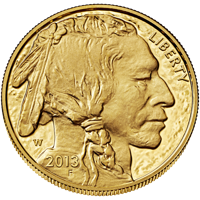
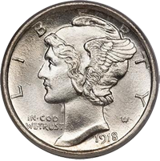
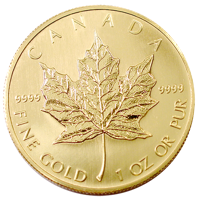
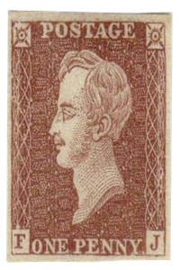
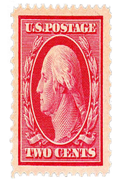
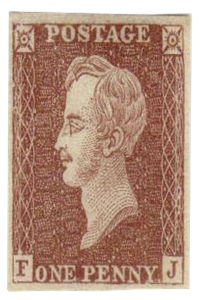
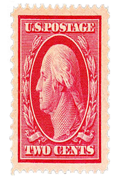

Get Started
Welcome to Collection Keeper!
Here you can start your own virtual collection of coins and stamps.
You can earn coins and stamps by trading and buying new ones at the shop.
To get started, sign up to create a new account. Your account will be completely free!
Click the Sign in button or the Account button for more info.
Collect Coins
  How to Collect Coins
Collecting coins to add to your collection is simple. After creating an account you can check the shop to see coins that are avaiable for purchase. At the shop you can sell your coins, buy coins from the bank, or buy coins from other users. You can also trade coins in the shop. To access the shop you must first create a new account.
Collect Stamps
 



How to Collect Stamps
Collecting stamps to add to your collection is simple. After creating an account you can check the shop to see stamps that are avaiable for purchase. At the shop you can sell your stamps, buy stamps from the bank, or buy stamps from other users. You can also trade stamps in the shop. To access the shop you must first create a new account.